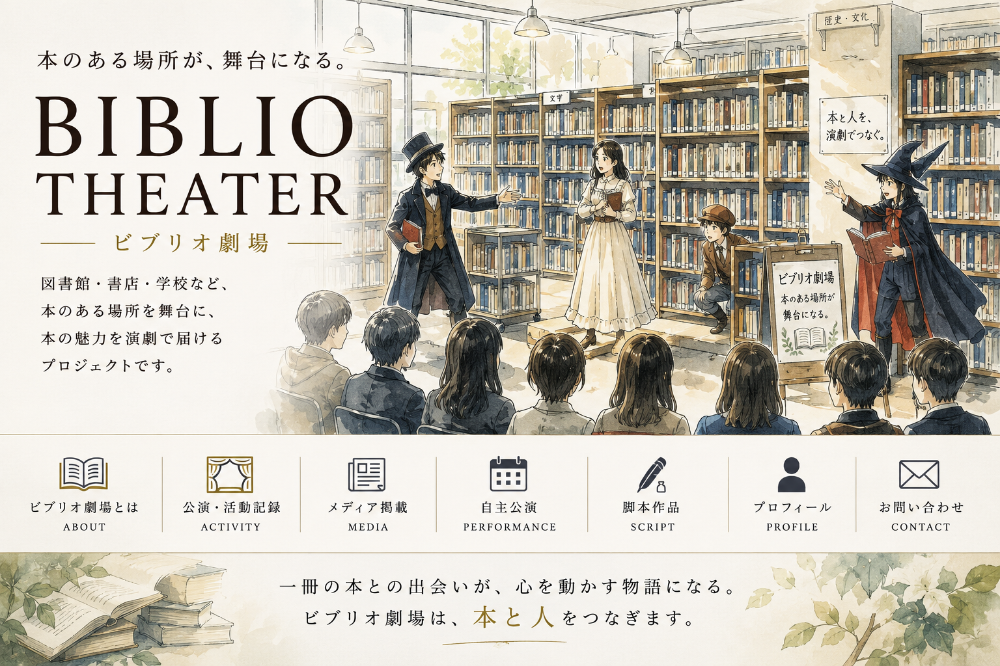
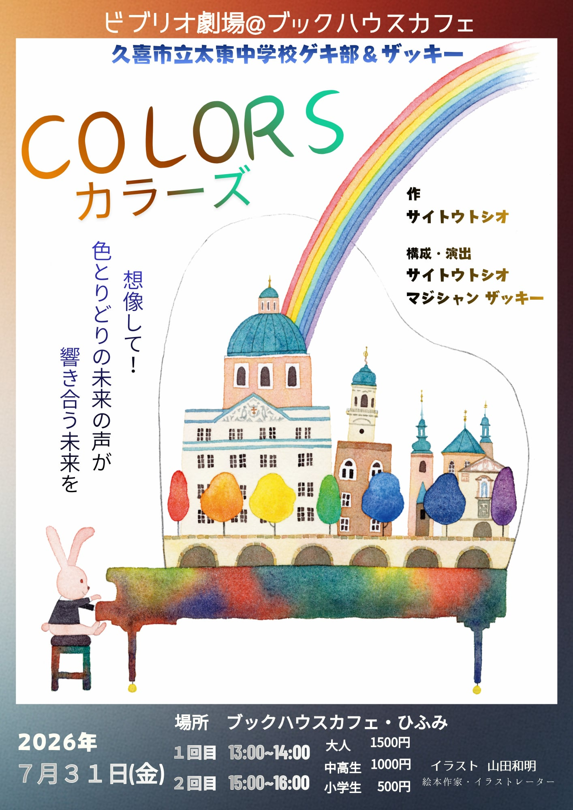
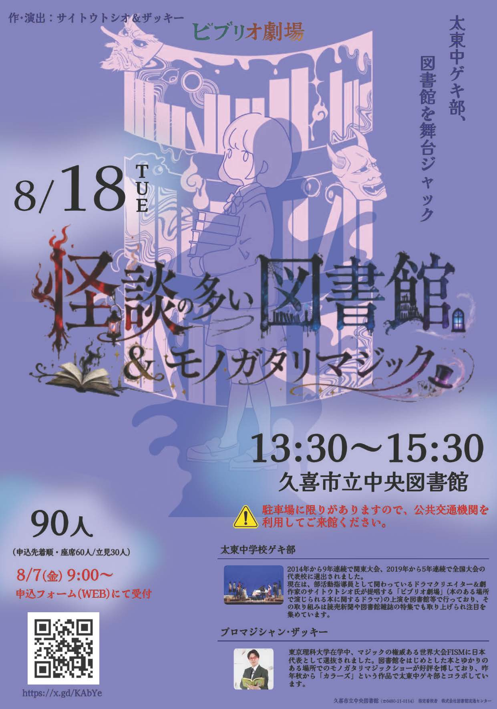

7月26日（日）／久喜市立太東中学校ゲキ部 自主公演
怪談の多い図書館
休館日の図書館を訪れた森本静花は、上演準備中の『怪談の多い図書館』と出会う。現実と劇の世界が重なり始め、静花は妖怪・天邪鬼をめぐる物語の真実へ近づいていきます。
日時：2026年7月26日（日）開場 13:30／開演 14:00
会場：栗橋文化会館イリス
入場：無料
作：サイトウトシオ illustration：髙橋咲

NEWS
UPCOMING STAGE
これから上演予定の公演を、開催日順にまとめました。新しい作品紹介は下の「レパートリー」でご覧いただけます。
7月26日（日）／久喜市立太東中学校ゲキ部 自主公演
休館日の図書館を訪れた森本静花は、上演準備中の『怪談の多い図書館』と出会う。現実と劇の世界が重なり始め、静花は妖怪・天邪鬼をめぐる物語の真実へ近づいていきます。
日時：2026年7月26日（日）開場 13:30／開演 14:00
会場：栗橋文化会館イリス
入場：無料
作：サイトウトシオ illustration：髙橋咲

7月30日（木）／申込不要
絵本ドラマリーディングに、プロマジシャン・ザッキーによる「モノガタリマジック」が加わる特別ステージです。
日時：2026年7月30日（木）開場 13:30／開演 14:00
会場：ブックハウスカフェ ひふみ
入場：無料・申込不要

7月31日（金）／要申込み
自由でにぎやかな図書館「カラーズ」を舞台に、多様性、平和、未来への願いを、演劇とマジックで描きます。
日時：2026年7月31日（金）13:00〜／15:00〜
会場：ブックハウスカフェ 2階 ひふみ
参加費：大人 1,500円／中高生 1,000円／小学生 500円

8月18日（火）／久喜市立中央図書館 休館日特別公演
『怪談の多い図書館』は、久喜市立中央図書館の休館日に、図書館全体を舞台として上演するために創作された作品です。8月18日は、その本来の舞台である中央図書館で上演します。
日時：2026年8月18日（火）13:30〜15:30
会場：久喜市立中央図書館
定員：90人（申込先着順・座席60人／立見30人）
申込：8月7日（金）9:00〜 申込フォーム（WEB）にて受付
ABOUT
本のある場所が 舞台になる
図書館、書店、まちライブラリーなど、本のある場所を舞台に、本に関係する劇を上演する取り組みです。
劇を通して、人と本、人と人がつながり、新しい出会いが生まれます。
REPERTOIRE
ビブリオ劇場の作品は、初演で終わるのではなく、図書館・書店・地域の場で再演されながら育っていきます。ここでは、現在上演中の作品も、これまでに上演してきた作品も「レパートリー」として紹介します。絵本ドラマリーディングは、下の独立したセクションで紹介します。
REPERTOIRE
図書館に棲む妖怪たちが登場する怪談劇。現在の中心作品です。
REPERTOIRE
色とりどりの未来を描く、演劇とマジックによる平和の物語。
REPERTOIRE
物語を演劇として立ち上げる、ビブリオ劇場の新しいレパートリー作品。
REPERTOIRE
ピアノと演劇が響き合う、平和への願いを込めた物語。
REPERTOIRE
図書館全体を舞台にした、本の迷宮をめぐるビブリオ劇場の原点となる作品。
PICTURE BOOK DRAMA READING
ビブリオ劇場のもう一つの柱
絵本ドラマリーディングは、一冊の絵本を「読む」だけではなく、衣装を着け、声と身体を使って、物語を小さな劇として届けるプログラムです。
これまでに取り上げた絵本
『ちいさなハチドリのちいさないってき』／『うそつきのつき』／『うさぎのしま』／『ぼくはふね』／『がっこうにまにあわない』 ほか
PROFILE
久喜市立太東中学校ゲキ部の演劇指導を担当。図書館・書店・学校など、本のある場所と中学生を演劇でつなぐ活動を行っています。
本のある場所を舞台に、物語の魅力を演劇で届ける活動を続けています。